CONTROL NODE
ansible-control
- Platform
- Ubuntu Server 26.04 LTS
- Automation
- Ansible 13.1.0
- Engine
- ansible-core 2.20.1
SCOPE 9 // PASS
Infrastructure case study LINUX / ANSIBLE
ANSIBLE HYPER-V UBUNTU
A three-node Ubuntu lab where one control plane turns security, web delivery, backups, and maintenance into repeatable operations.
01 / LAB ARCHITECTURE
The Hyper-V lab contains one Ansible control node managing two Ubuntu Server nodes through a deliberate, inspectable automation path.
CONTROL NODE
MANAGED NODE / 01
MANAGED NODE / 02
02 / SYSTEM LAYERS
Every layer has a defined job—from virtualization and remote access to service delivery and scheduled maintenance.
03 / AUTOMATION RUNBOOK
Provisioning, security, delivery, backup, maintenance, and evidence collection are handled as an ordered operating model.
8 / 8 syntax checks passed. Repeat runs confirmed idempotency for seven configuration playbooks. Log collection completed successfully.
Ensures configured administrative groups and managed user accounts are present.
user_group_management.ymlRefreshes package metadata safely and keeps required managed packages installed.
package_management.ymlApplies restrictive UFW defaults while preserving approved OpenSSH administration.
firewall_baseline.ymlDeploys a validated SSH baseline that disables root and password-based access.
ssh_hardening.ymlInstalls Nginx, deploys the lab landing page, and keeps the service enabled and running.
nginx_deployment.ymlCreates protected configuration backups and schedules recurring runs with a systemd timer.
backup_automation.ymlKeeps log rotation and temporary-file cleanup scheduled.
maintenance_automation.ymlCollects public-safe service, timer, backup, maintenance, and disk-status evidence.
log_collection.yml04 / SECURITY BASELINE
Effective SSH settings and the UFW baseline were validated on both managed nodes.
novalidatednovalidatedyesvalidatedactivevalidatedallowedvalidatedallowedvalidated05 / WEB DELIVERY
Ansible deploys and maintains Nginx across both managed nodes. The visible landing page is the final link in that automation chain.
ActiveNginx is active on both managed nodes.
EnabledNginx is enabled on both managed nodes.
RepeatableDeployment passed idempotency validation.
VisibleLanding-page validation passed.
Linux Infrastructure Automation Lab
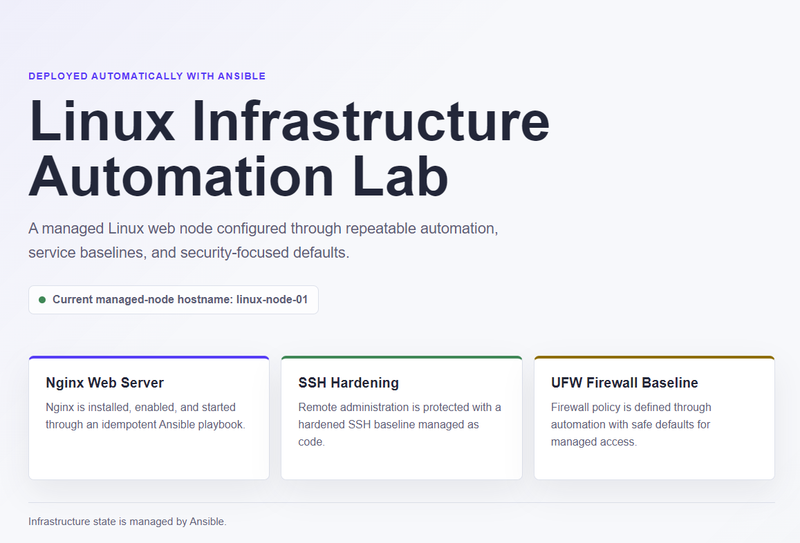
06 / OPERATIONS
Backup, logging, and routine maintenance turn a configured lab into an operable one.
BACKUP AUTOMATION
ROUTINE MAINTENANCE
logrotate.timer enabled + activesystemd-tmpfiles-clean.timer static + activeOPERATIONAL EVIDENCE
PASS
07 / VALIDATION LEDGER
8 of 8 Ansible playbooks passed syntax validation.
Both managed nodes passed Ansible ping.
Configuration automation areas passed idempotency validation.
Validation snapshot: all three nodes had zero failed systemd units.
Backup archives passed integrity and readability checks on both managed nodes.
14 evidence screenshots were captured and verified.
Evidence, collected logs, and documentation passed the refined public-safety scan.
Two IPv4-pattern matches were reviewed as harmless netmask false positives.
08 / EVIDENCE LEDGER
14Public-safe
screenshots
Screenshots document architecture, connectivity, automation, security, web deployment, operations, system health, and public-safety validation.
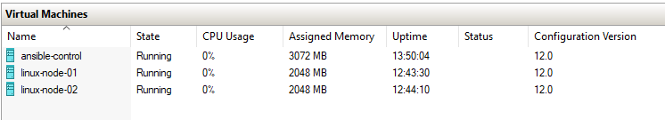
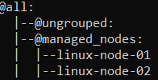
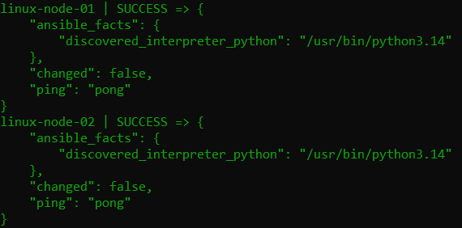
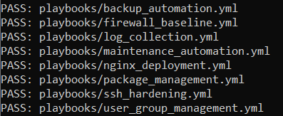
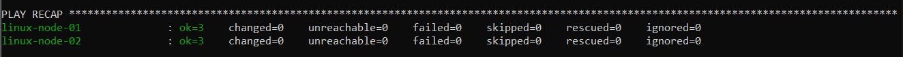
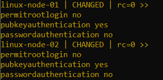
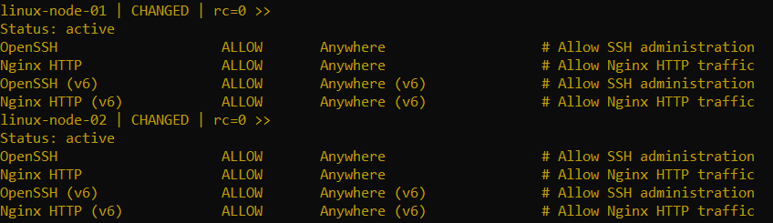
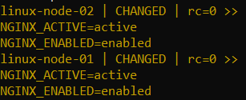
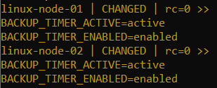
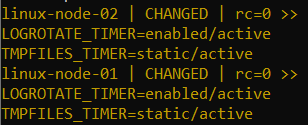
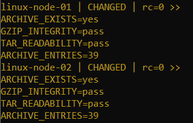
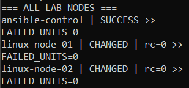
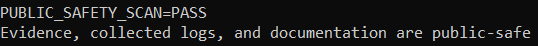
09 / LESSONS LEARNED
The lab was refined through real issues encountered during Scopes 1–9, turning troubleshooting into repeatable operating guidance.
Issue: Git actions fail when a project directory is not initialized. Takeaway: Confirm repository state before starting any Git workflow.
Issue: Privileged validation requires authentication. Takeaway: Prompt securely at runtime; never store or expose credentials.
Issue: An obsolete output option produced a deprecation warning. Takeaway: Use standard Ansible output to keep validation readable and forward-compatible.
Issue: An expired cache window can produce an expected package-cache change. Takeaway: Refresh the cache, then repeat the check promptly before judging idempotency.
Issue: Netmask values triggered IPv4-pattern matches. Takeaway: Review matches in context and exclude only confirmed harmless false positives from the refined scan.
Issue: Some operational tasks intentionally skip in check mode. Takeaway: Interpret skips alongside zero failures and unchanged configuration tasks.
{kind=link}
{kind=link}
{kind=link}
{kind=link}
{kind=link}
{kind=link}
{kind=link}
{kind=link}
{kind=link}
{kind=link}
{kind=link}
{kind=link}
{kind=link}
{kind=link}